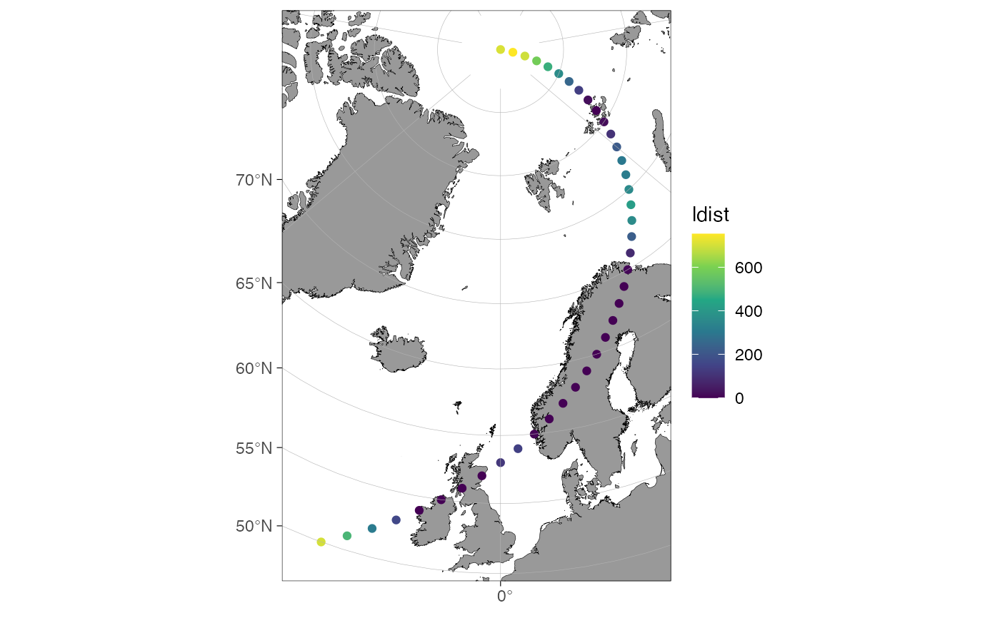
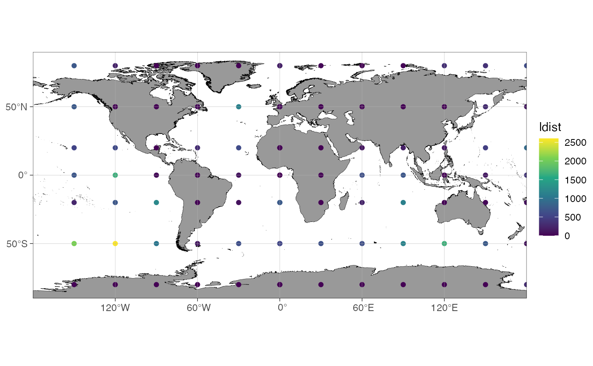

Calculates the closest distance to land for coordinates in a data frame
Usage
dist2land(
data,
lon = NULL,
lat = NULL,
shapefile = "DecimalDegree",
proj.in = 4326,
bind = TRUE,
dist.col = "ldist",
binary = FALSE,
verbose = TRUE
)Arguments
- data
Data frame or sf object containing geographic coordinates.
- lon, lat
Either the names of the longitude and latitude columns in
dataorNULLto guess the longitude and/or latitude columns indata.- shapefile
Land shape to which distances should be calculated. Either a character argument referring to a name of pre-made shapefiles in
shapefile_list, a single sf orsppolygons object object orNULLto enable automatic definition of the land shapes based ondata. Set to"DecimalDegree"by default which enables great circle distances using s2 features assuming a spherical Earth (as a contrast to earlier versions of the function which used flat Earth).- proj.in
coordinate reference systemofdata.- bind
Logical indicating whether
xshould be returned with the distances (TRUE, default) or should the distances be returned as vector (FALSE).- dist.col
The name of the distance column, if
bind = TRUE. Defaults to "ldist".- binary
Logical indicating whether binary (TRUE = the position is in the ocean, FALSE = the position is on land) should be returned instead of distances. Speeds up the function considerably.
- verbose
Logical indicating whether information about the process should be returned as messages. Set to
FALSEto make the function silent.
Value
Returns a vector if bind = FALSE, otherwise a data frame. The distances are given in a new column defined by the dist.col argument. The distances are kilometers if binary = FALSE, otherwise logical (TRUE = the position is in the ocean, FALSE = the position is on land).
Details
The function calculates great circle spherical distances using the st_distance function by default. The function can be slow for large datasets. If you only want to use the function to remove (wrong) observations reported on land, set the binary argument to TRUE. This speeds up the calculations by a factor of ten.
Examples
# Simple example:
dt <- data.frame(lon = seq(-20, 80, length.out = 41), lat = 50:90)
dt <- dist2land(dt, verbose = FALSE)
# \donttest{
qmap(dt, color = ldist) + scale_color_viridis_c()

# Datasets covering the entire Earth seem to work now, except 0,0 lon/lat point
lon = deg_to_dd(seq(0,360,30)); lat = c(80,50,20,0,-20,-50,-80)
dt <- data.frame(
lon = rep(lon, length(lat)), lat = rep(lat, each = length(lon)))
qmap(dist2land(dt, verbose = FALSE), color = ldist) +
scale_color_viridis_c()

# }
if (FALSE) { # \dontrun{
dt <- data.frame(
lon = deg_to_dd(seq(0,360,length.out = 1e3)),
lat = rep(60, 1000))
# The distance calculation is slow for large datasets
system.time(dist2land(dt))
# user system elapsed
# 12.677 0.146 12.849
# binary = TRUE speeds the function up
system.time(dist2land(dt, binary = TRUE))
# user system elapsed
# 1.239 0.120 1.369
} # }